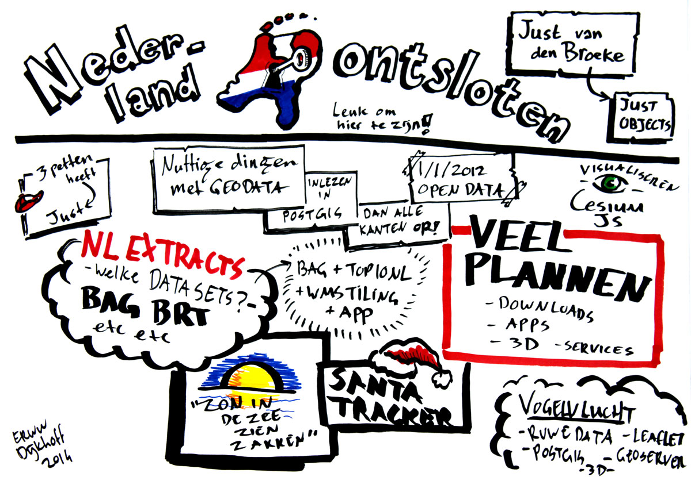
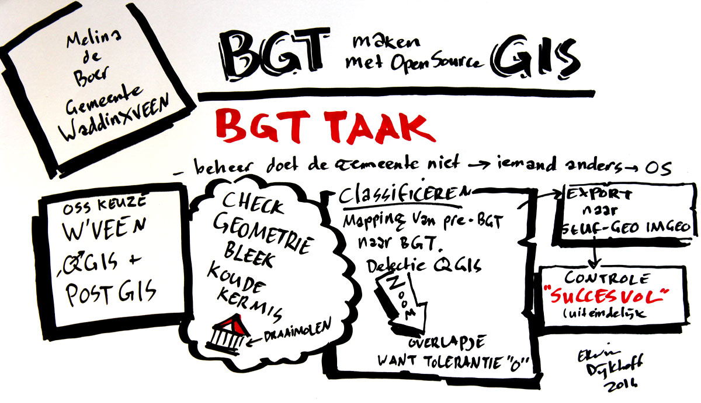
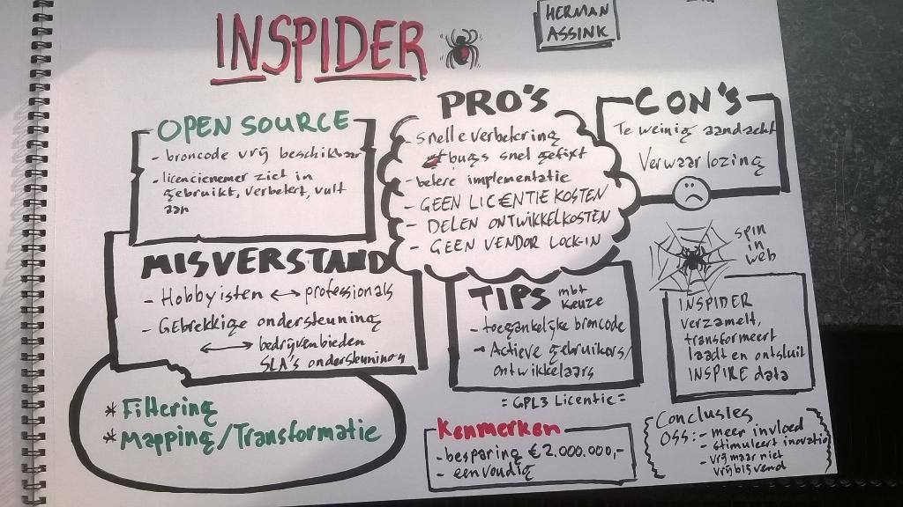
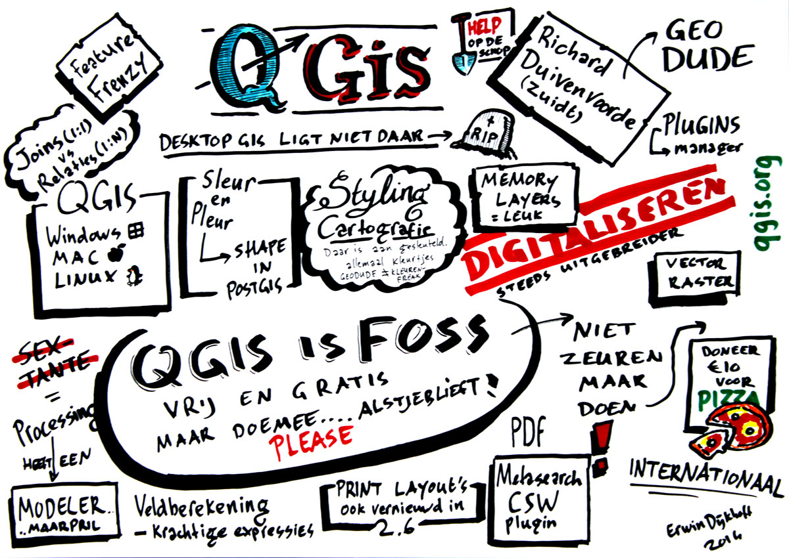
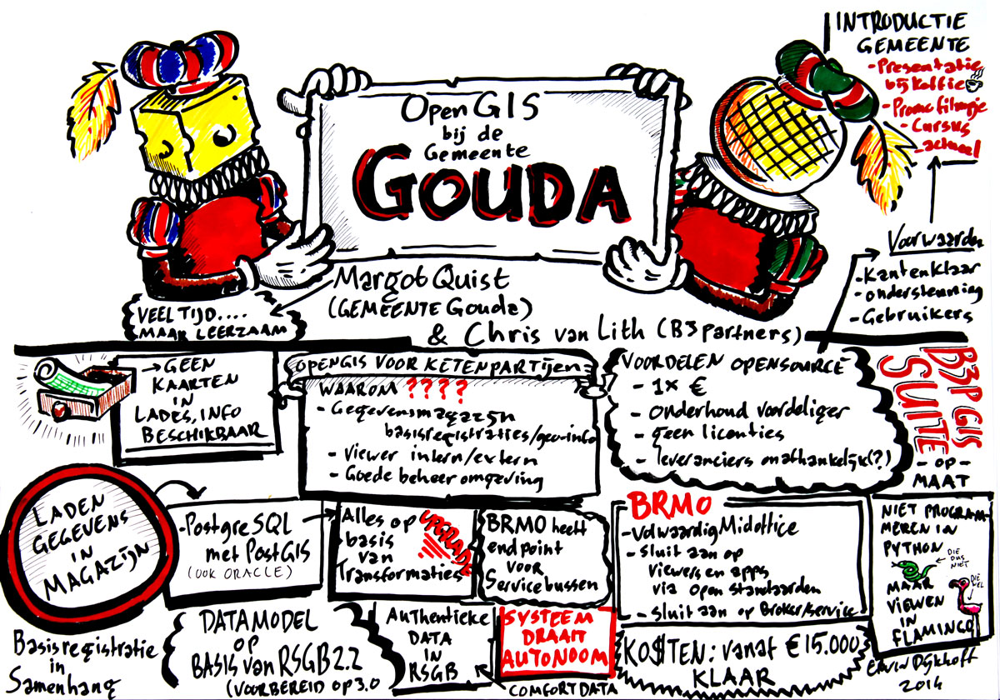
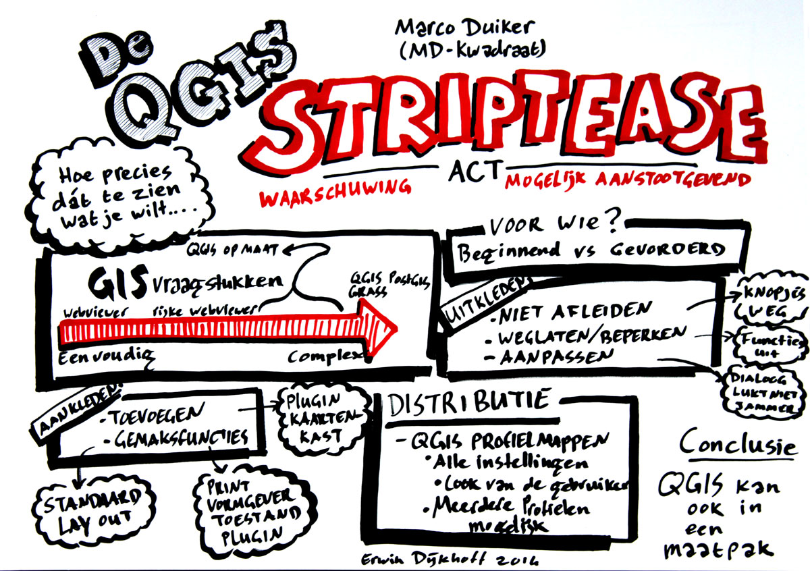
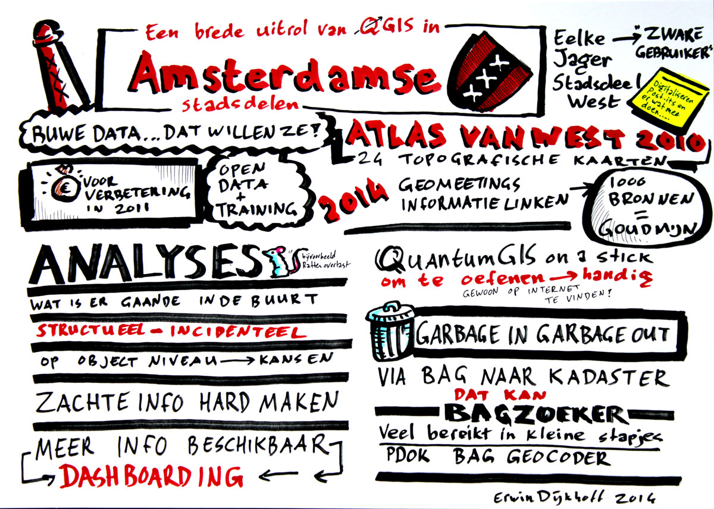
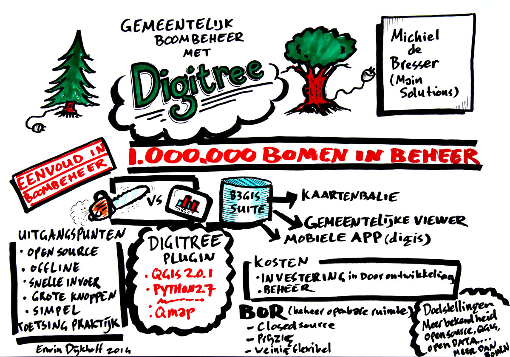
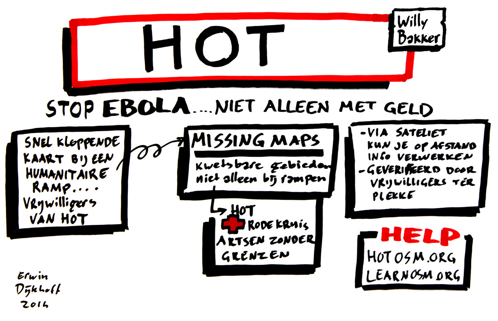
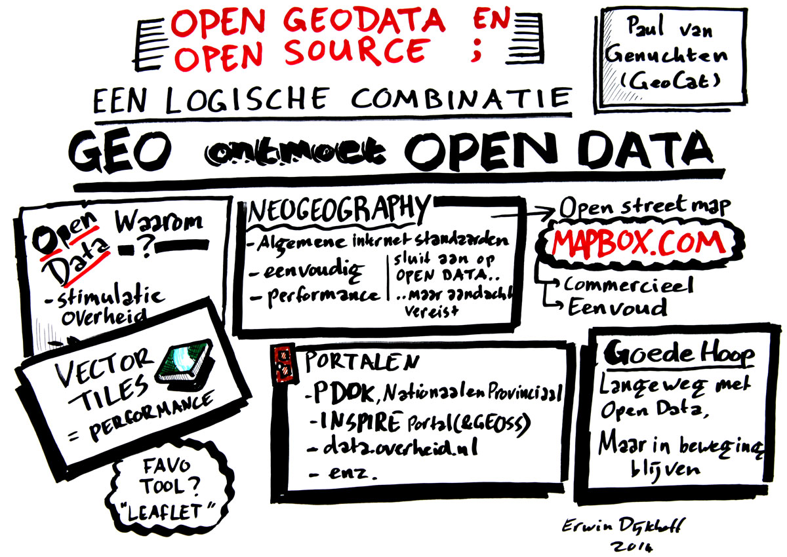

Verslag OSGEO.nl dag 2014
De OSGeo.nl dag was dit jaar onderdeel van GeoBuzz en vond plaats op 25 november in Den Bosch.Het programma bood voor zowel toekomstige als bestaande gebruikers van opensource-GIS interessante presentaties en workshops. Het thema was: het juiste gereedschap voor iedere klus! Op deze pagina een groot deel van de presentaties. Met tekeningen van Erwin Dijkhoff.
Workshop OpenGeo Suite - Bart van den Eijnden (Boundless) & Anton Bakker (GeoCat)
Wil je graag leren hoe je een online geo applicatie kunt bouwen? Deze workshop zal deelnemers bekend maken met de componenten van een complete, open source web mapping oplossing (genaamd OpenGeo Suite). De workshop zal de componenten PostGIS, GeoServer en OpenLayers 3 gebruiken om een volledige applicatie te bouwen. Neem een eigen laptop mee. Garandeer jezelf van een plaats door te registreren op https://www.geocat.net/opengeo-suite-workshop-at-geobuzz.
Bart van den Eijnden (Boundless) is gespecialiseerd in front-end ontwikkeling en is actief in de open source communites van onder andere OpenLayers en GeoExt. Sinds 2013 is Bart ook lid van de board of directors van de internationale stichting OSGeo.
Anton Bakker is ontwikkelaar bij GeoCat bv in het team GeoCat Bridge, een ArcGIS Desktop (TM) extensie voor het publiceren van (meta)data in onder andere OpenGeo Suite. Daarnaast ontwikkelt Anton web mapping applicaties en mobiele apps.
Workshop materiaal
Nederland ontsloten! - Just van den Broecke (Just Objects)

Nederland is sinds 1 januari 2012 een stuk rijker geworden. Op Open Data gebied dan. BAG, BRT, AHN2 en meer, zijn allen nu vrij beschikbaar. Maar dan? Deze databronnen (GML!) zijn als ruwe olie. Een geraffineerde aanpak is nodig om er bijvoorbeeld een kaart of adressenbestand mee te maken. Gelukkig zijn er een aantal Nederlandse open source projecten: NLExtract, OpenTopo en Heron vromen, samen met QGIS, PostGIS etcetera, een keten waardoor de data-motor kan gaan draaien en we Nederland van boven, onder en opzij kunnen ontsluiten en beleven.
In vogelvlucht komen de voornaamste features van bovengenoemde projecten voorbij, accelerend van bron tot resultaat.
Just van den Broecke (Just Objects) is naast bestuurslid van OSGeo.nl oo maker van een groot aantal geo-opensourceproducten, waaronder Heron.
 Presentatie
Presentatie
BGT met PostGIS in 15 dagen! - Marlies de Boer (Gemeente Waddinxveen)

Marlies liet zien hoe een middelgrote gemeente de BGT op orde kan krijgen in 15 dagen met behulp van PostGIS
Presentatie
INSPIDER - Herman Assink (ID-GIS)

Herman liet aan de hand van INSPIDER en Planoview zien waarom overheden voor Open Source moeten kiezen
Presentatie
Feature frenzy QGIS - Richard Duivenvoorde (Zuidt)

Richard laat zien wat voor nieuws er is verschenen in de laatste versie QGIS 2.6 (Brighton). Naast het tonen van die nieuwe features verzorgt hij ook een introductie in hoe u actief deelneemt in QGIS en haar ontwikkelingen, om zo uw eigen geografische uitdagingen te kunnen oplossen.
Richard Duivenvoorde is als Infrastructure Manager lid van het QGIS Project Steering Committee. In Nederland is hij vooral actief als zelfstandig GIS-ontwikkelaar.
Presentatie
Feature frenzy QGIS - Margot Quist (Gemeente Gouda) Chris (B3 partners)

Chris en Margot lieten zien waarom een gemeente voor open source moet kiezen
Presentatie
De QGIS striptease-act: hoe precies dat te zien wat je wilt - Marco Duiker (MD-Kwadraat)

Al jaren is er de kreet om GIS-software wat meer op maat te leveren, terwijl maatwerk je op termijn altijd dwars gaat zitten bij upgrades en mogelijke migraties. Voor Natuurmonumenten heeft Marco Duiker een tussenoplossing gemaakt: door QGIS uit te kleden en vervolgens op maat weer van de juiste aankleding te voorzien, is een heel overzichtelijk maatkostuum ontstaan. In deze sessie laat Marco zien hoe dat te doen is.
Marco Duiker is zelfstandig GIS-consultant en docent bij de Geo Academie.
QGIS in Amsterdamse stadsdelen - Eelke de Jager (Amsterdam West)

Eelke had een geweldig verhaal over hoe een 100-tal beleidsambtenaren in Amsterdamse stadsdelen QGIS gebruiken om open data te visualiren om beleidsvragen mee te ondersteunen
Presentatie
Gemeentelijk boombeheer met Digitree - Michiel de Bresser (Main Solutions)

Groenbeheerders en ICT vormen niet altijd een even gelukkige combinatie. Maar niet gehinderd door een traditioneel gesloten beheersysteem, kan een boombeheerder snel aan de slag met een praktisch hanteerbare tool voor boombeheerders. Zo krijgt een groenbeheerder op eenvoudige wijze overzicht over het bomenbestand.
In deze presentatie laat Michiel de Bresser zien hoe je met de digitree plugin QGIS als gereedschap voor het inspecteren en beheren van bomen inzet.
Via eenvoudige uitwisselprotocollen synchroniseert een boombeheerder inspectiegegevens op zijn mobiele device met een online database. Vanuit deze database worden de boomgegevens ontsloten via de kaartenbalie, een online viewer. Door handig gebruik te maken van Open Standaarden worden de gegevens ook ontsloten naar het eigen beheersysteem, en mogelijk naar de gemeentelijke viewer.
Michiel de Bresser is initiatiefnemer van Digitree.
Presentatie
Missing maps - Willy Bakker (Provincie Groningen)

Ter vervanging van Steven Ottens (ziek) sprong Willy spontaan in om over haar favoriete project, humanitarion Open Street Map Team te presenteren
Presentatie
Open geodata & Open Source; een logische combinatie - Paul van Genuchten (GeoCat)

Geo heeft traditioneel een lange historie met data uitwisseling en standaarden. Toch lopen we regelmatig tegen onbegrip aan vanuit de open data beweging. Is het de wet van remmende voorsprong, of vooral een spiegel? In deze presentatie richten we de neuzen vooruit en kijken we wat er prima loopt. Open Source is een belangrijke facilitator van Open Data; het sluit goed aan op de Open Data community, het biedt toegankelijke ruimtelijke tooling buiten de traditionele GIS afdelingen en het bevordert interoperabiliteit. Daarnaast praktische tips hoe u uw kennis van data uitwisseling in kunt zetten in uw organisatie, zelfs tot buiten het geo-domein.
Paul van Genuchten is ontwikkelaar van het GeoNetwork opensource project, een metadata catalogus waar onder andere het Nationaal Georegister op gebaseerd is. Daarnaast adviseert hij organisaties bij de implementatie van (Open) Data diensten, onder andere in het kader van INSPIRE.
Presentatie
State of OSGeo.org - Bart van den Eijnden (OSGeo.org) & Gert-Jan van der Weijden (OSGeo.nl)

Bart van den Eijnden is lid van de board of directors van de internationale stichting OSGeo (Open Source Geospatial Foundation). Gert-Jan van der Weijden is voorzitter van OSGeo.NL, het Nederlandse chapter. Samen presenteren zij de stand van zaken rond Open Geo anno 2014.
Presentatie